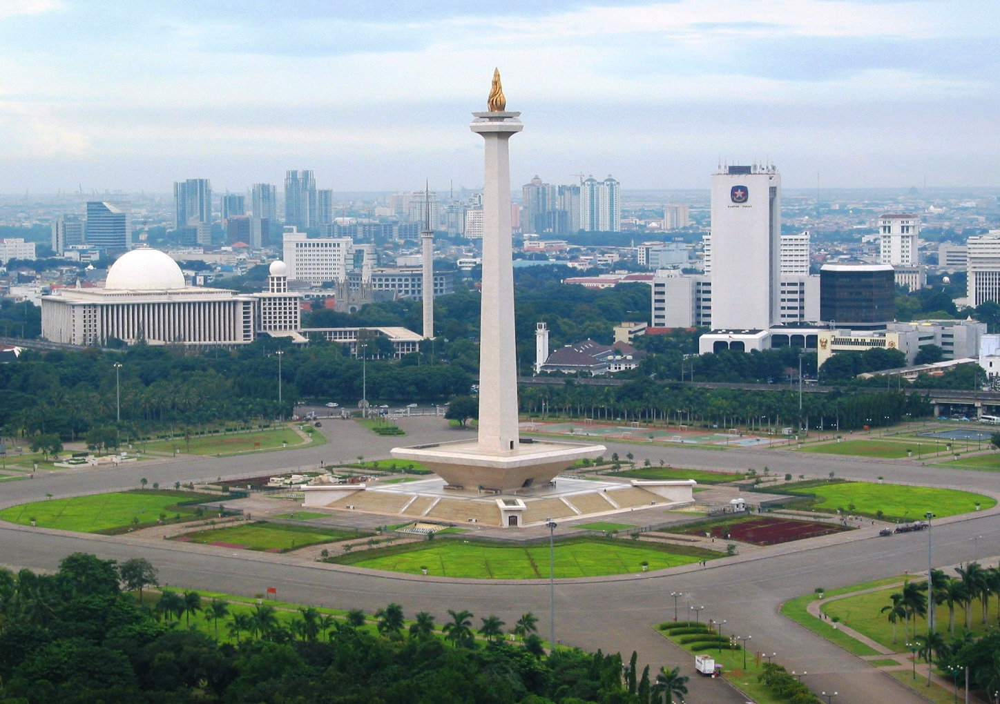
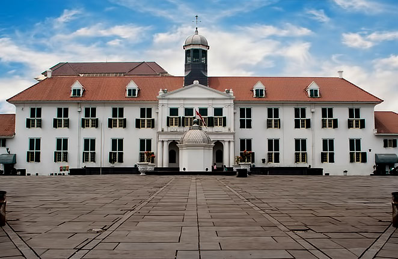
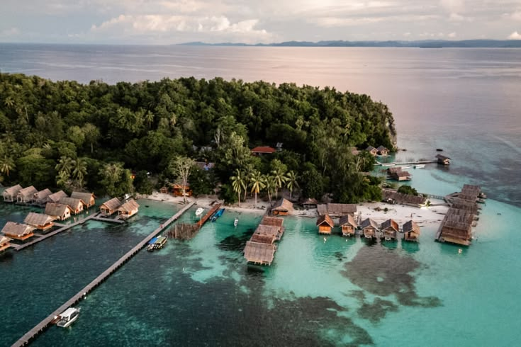

Pelesir Wisata DKI Jakarta
Tiga destinasi unggulan paling tersohor yang wajib dikunjungi dengan perpaduan sejarah, bahari, dan edukasi budaya.

Jakarta PusatMonumen Nasional (Monas)
Monumen peringatan setinggi 132 meter dengan puncak cawan berlapis emas 50 kg, dilengkapi museum sejarah nasional dan pelataran puncak dengan panorama seluruh Jakarta.

Jakarta BaratKawasan Kota Tua Jakarta
Pusat sejarah Batavia yang memiliki Museum Sejarah Jakarta (Fatahillah), Museum Wayang, kafe bersejarah Cafe Batavia, dan persewaan sepeda ontel warna-warni.

Kepulauan SeribuTaman Bahari Kepulauan Seribu
Gugusan pulau tropis berpasir putih dan terumbu karang indah di utara teluk Jakarta seperti Pulau Pari, Tidung, Pramuka, dan Pulau Macan dengan keasrian laut nan jernih.